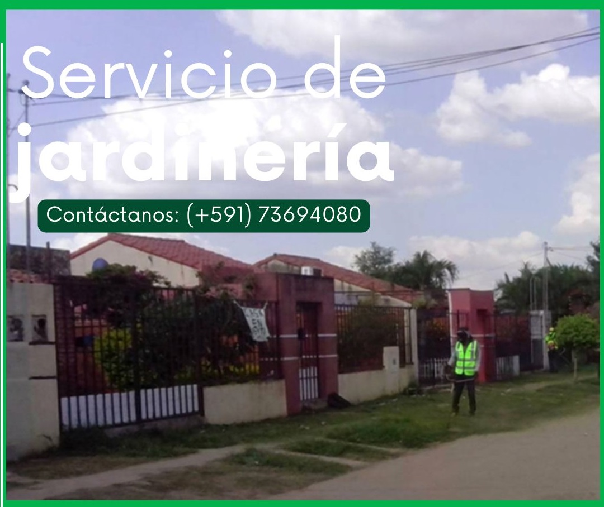

REGISTRO FOTOGRÁFICO DE REFERENCIA 1

REGISTRO FOTOGRÁFICO DE REFERENCIA 2
Desbrozado de Entradas, Patios y Jardines
Ofrecemos un servicio completo de limpieza, desbrozado y perfilado de áreas verdes para recuperar la habitabilidad y estética de tus exteriores. Solucionamos problemas de maleza crecida, acumulaciones de follaje y descuido en jardines residenciales o corporativos utilizando herramientas profesionales que garantizan un acabado uniforme, limpio y duradero.
Respaldo Formal para Administraciones y Empresas
Facilitamos la gestión contable de su condominio o negocio. Coordinamos la ejecución de trabajos mediante el mecanismo legal de retenciones impositivas vigentes o mediante facturación electrónica según el requerimiento de su administración.